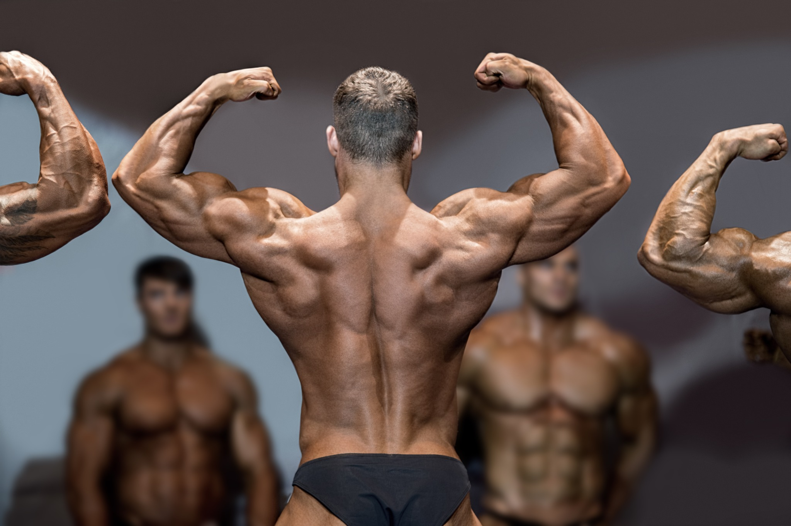

01 / BODYBUILDING
ボディビル
己を鍛え、
圧倒的な身体へ。
「もっとかっこよくなりたい」。その気持ちが、最初の一歩。筋肉の大きさ、シルエット、バランスを磨き、自分が誇れる身体をつくっていこう。
ボディビル、クラシックフィジーク、メンズフィジークなど、カテゴリーは問いません。理想の姿を語り合い、日々の変化を刺激にしながら、仲間と一緒に成長します。
大会は自由参加ステージを目指す人も、まずは身体づくりを楽しみたい人も。目標も挑戦のタイミングも、自分で決められます。
なりたい自分へ、一緒に鍛えよう ↗